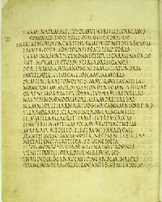
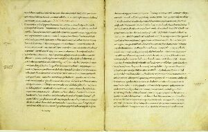

| Il Liber Catullianus si divide in tre sezioni: nella prima ( carmi 1-60) si trovano brevi carmi in metri diversi, di argomento vario e quasi sempre leggero e sono detti POLIMETRI, cioè sono stati scritti in endecasillabi faleci, trimetri giambici, coliambi e metri lirici. Nella seconda vi sono i cosidetti CARMINA DOCTA ( carmi 61-68 ) in cui predominano l'esametro o il distico elegiaco e argomenti mitologici. Nell'ultima parte ( carme 69-116 ), sono collocati epigrammi in distici elegiaci tra i quali alcuni di carattere satirico. |  |
1631 fol.15 verso vlib21 INT.10 |
La raccolta così come ci è arrivata ci è stata conservata da un manoscritto medioevale scoperto nel 1300 a Verona. Questo manoscritto è stato compilato da mano ignota; è probabile che Catullo avesse pubblicato alcune raccolte, fatto testimoniato dalla Pal. lat.
presenza di diversi componimenti di dedica. Tra i primi commentatori conosciuti del Liber troviamo Angelo Poliziano, uomo di corte di Lorenzo de Medici, ma anche Petrarca conosceva i carmina di Catullo.
Circa un quarto dei componimenti è di argomento amoroso, amore verso una ragazza di nome Lesbia, di cui era innamorato il poeta. Lesbia non è il nome originale della ragazza che infatti si chiama Clodia. Non si può cercare di ricostruire questa vicenda amorosa tentando di metter in sequenza queste opere, sia perchè i carmina di Catullo sono ordinati secondo uno schema metrico, sia perchè la poesia catulliana non è una cronaca o un diario, ma vuole esprimere i sentimenti di una travagliata storia d'amore. All'interno di questa vicenda troviamo alcuni topoi della poesia ellenistica come quello delle inaffidabili promesse tra amanti oppure quello degli anziani che parlano male dei giovani.
|  | L'agressività verso i nemici. Verso i nemici Catullo si mostra con un atteggiamento aggressivo sia nel replicare ai torti patiti che nel mettere in ridicolo le colpe e i difetti degli altri. Nella prima parte della raccolta, l'agressività si manifesta sotto la forma di invettiva con una ampia sequenza di accuse e di minacce. Le descrizioni dei personaggi spesso procedono in forme di accumulo, dove a gran parte l'enfasi realizzata tramite il parallelismo e la ripetizione. |
| Pal. lat. 899 fols. 209 verso-210 recto vlib20 INT.09 |